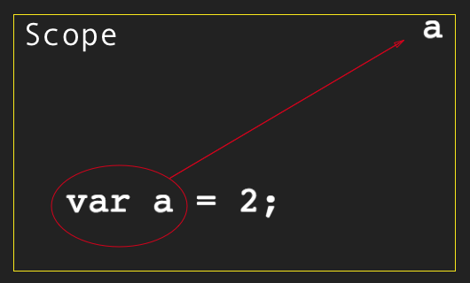

Scope
&
closures
Как переменные попадают в области видимости?
Как идентификаторы находятся в области видимости?
LHS = RHS
LHS: var a = 2;
RHS: var a = b + c;
RHS: console.log(a)
Example
function foo(a) {
var b = a;
return a + b;
}
var c = foo( 2 );
Nested Scopes

Errors ⛔️
RHS => ReferenceError
LHS => leaked global variable
LHS + 'strict mode'=> ReferenceError
"don't call me"()=> TypeError
Типы Областей Видимости
Lexical scope - ✍🏻 write-time
Dynamyc scope - 🚀 runtime
Cheating lexical 🚨
eval
with
Функция eval
function foo(str, a) {
eval( str ); // cheating!
console.log( a, b );
}
var b = 2;
foo("var b = 3;", 1); // 1 3
Ключевое слово with
var obj = {
a: 1,
b: 2,
c: 3
};
// дооолго писать
obj.a = 2;
obj.b = 3;
obj.c = 4;
// норм
with (obj) {
a = 3;
b = 4;
c = 5;
}
with
function foo(obj) {
with(obj) {
a = 2;
}
}
var o1 = {
a: 3
};
var o2 = {
b: 3
};
foo( o1 );
console.log( o1.a ); // 2
foo( o2 );
console.log( o2.a ); // undefined
console.log( a ); // 2 -- Упс, глобальная переменная!
Never use
with & eval!
Why scope?
Principle of Least Privilege
Collision Avoidance
Functions As Scopes
var a = 2;
function foo() {
var a = 3;
console.log( a ); // 3
}
foo();
console.log( a ); // 2
IIFE
Immediately Invoked Function Expressions
var a = 2;
(function foo(){
var a = 3;
console.log( a ); // 3
})();
console.log( a ); // 2
Function expressions vs. Function declarations
/* FUNCTION DECLARATION */
function foo() {
console.log("I'm function declaration");
}
/* FUNCTION EXPRESSIONS */
var x = function () {
console.log('I'm an anonymous function expression')
}
var y = function doMagic () {
console.log('I'm a named function expression')
}
(function () {
console.log('I'm a self-invoking function expression')
})()
(function doMagic () {
console.log('I'm a named self-invoking function expression')
})()
setTimeout(function () {
console.log('I'm also an anonymous function expression)
}, 1000);
setTimeout(function timeoutHandler () {
console.log('I'm also a named function expression)
}, 1000);
Anonymous vs. Named
Function Expressions
setTimeout( function timeoutHandler(){ // <-- Look, I have a name!
console.log( "I waited 1 second!" );
}, 1000 );
let, const
var foo = true;
if (foo) {
let bar = foo * 2;
bar = something( bar );
console.log( bar );
}
console.log( bar ); // ReferenceError
a = 2;
var a;
console.log( a );
console.log( a );
var a = 2;
Functions First
foo(); // 1
var foo;
function foo() {
console.log( 1 );
}
foo = function() {
console.log( 2 );
};
foo(); // not ReferenceError, but TypeError!
var foo = function bar() {
// ...
};
Closure
Замыкание это когда функция запоминает и имеет доступ к своей лексической области видимости, даже если она была вызвана вне этой области.
Creating a closure
function getTomatoes() {
var numberOfTomatoes = 22;
function garden() {
('There are ' + numberOfTomatoes + ' tomatoes in the garden');
}
garden();
}
getTomatoes() // --> There are 22 tomatoes in the garden
Exercising a closure
function getTomatoes() {
var numberOfTomatoes = 22;
return function garden() {
console.log('There are ' + numberOfFairies + ' tomatoes in the garden');
}
}
var gardenMagic = getTomatoes()
gardenMagic(); // --> There are 22 tomatoes in the garden
Canonical loop example
for (var i=1; i<=5; i++) {
setTimeout( function timer(){
console.log( i );
}, i*1000 );
}
IIFE solution
for (var i=1; i<=5; i++) {
(function(){
var j = i;
setTimeout( function timer(){
console.log( j );
}, j*1000 );
})();
}
Block scoping solution
for (let i=1; i<=5; i++) {
setTimeout( function timer(){
console.log( i );
}, i*1000 );
}
Module Pattern
function myModule () {
var greeting = "hello";
function sayGreeting () { // closes over the private scope of myModule
console.log(greeting);
};
return {
sayGreeting: sayGreeting
};
}
var mod = myModule(); // creates an instance of myModule
mod.sayGreeting(); // exercises the closure and logs hello
Review
Scope
Lexical Scope
Hoisting
Closure
Module Pattern